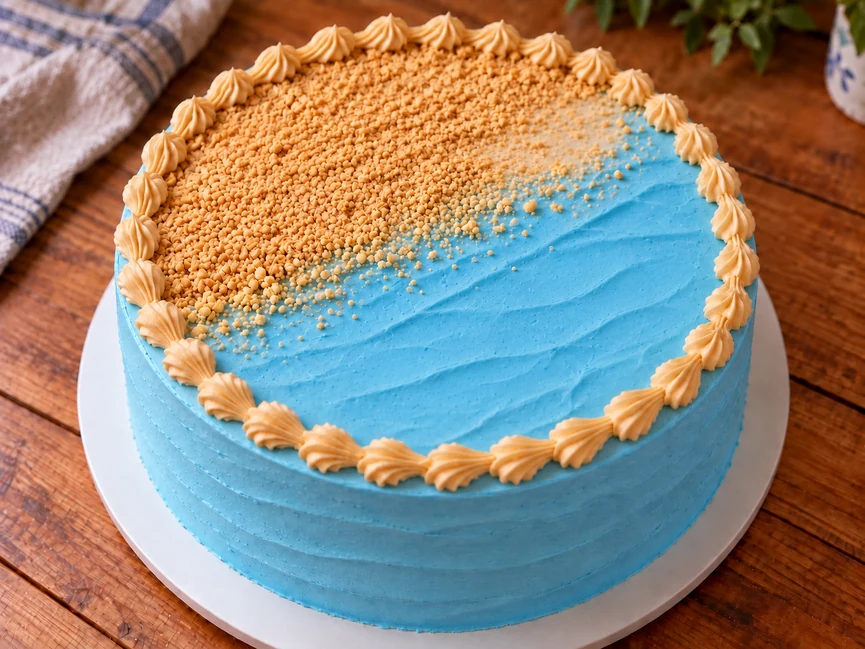
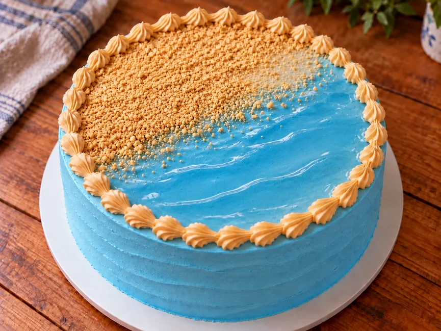
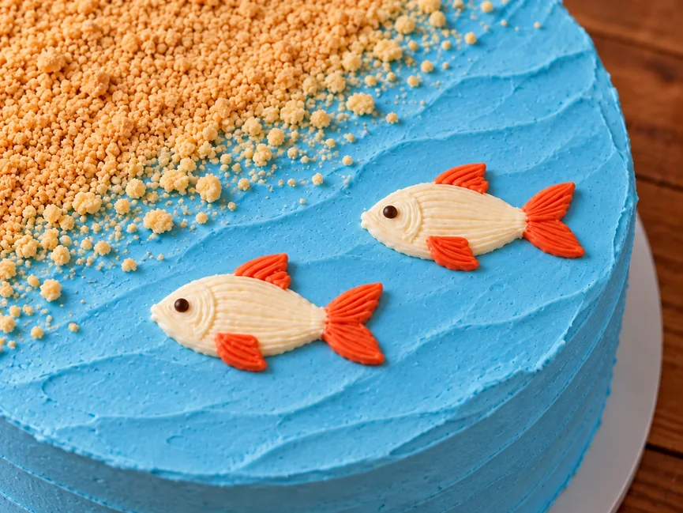
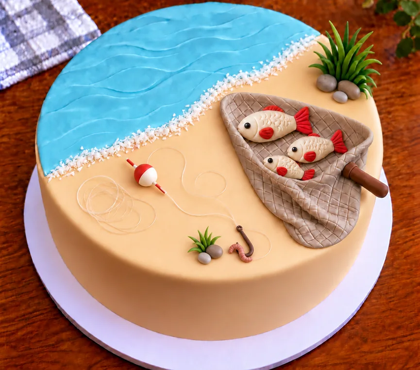
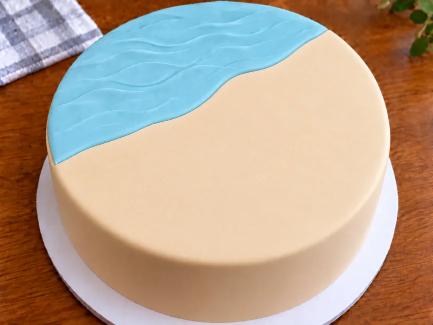
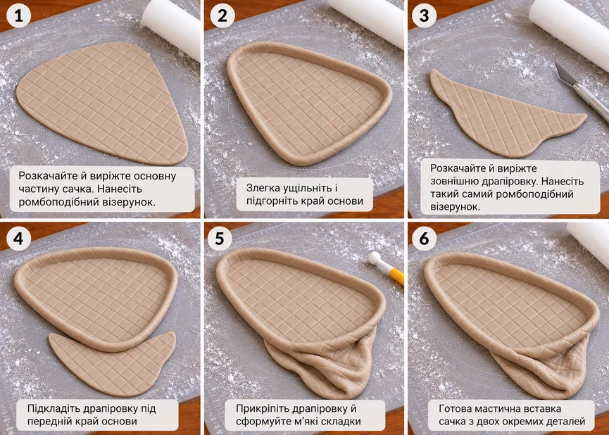
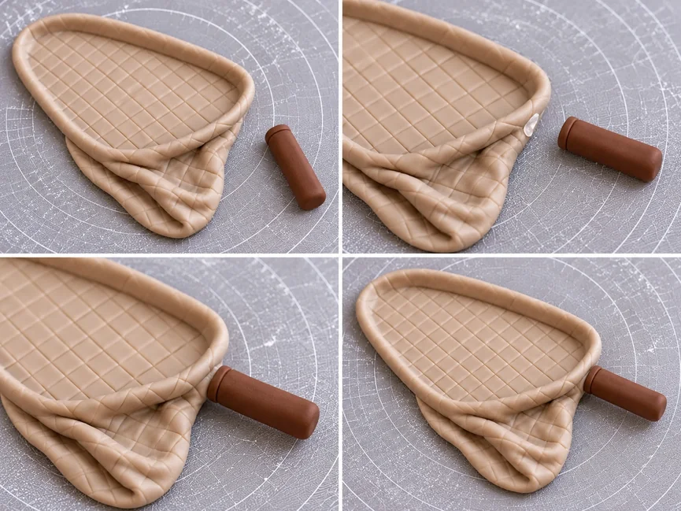
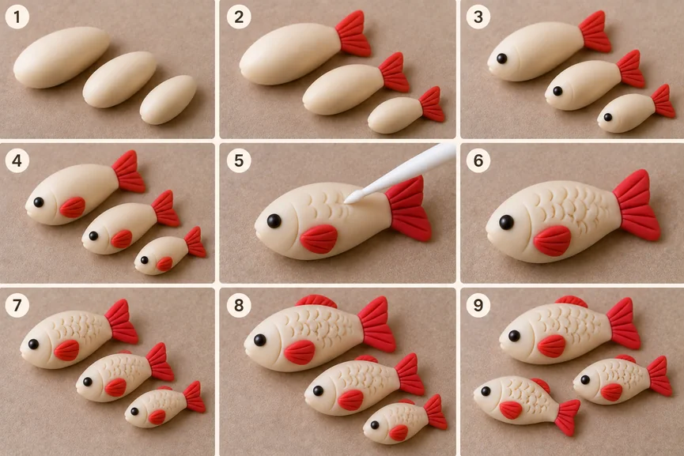
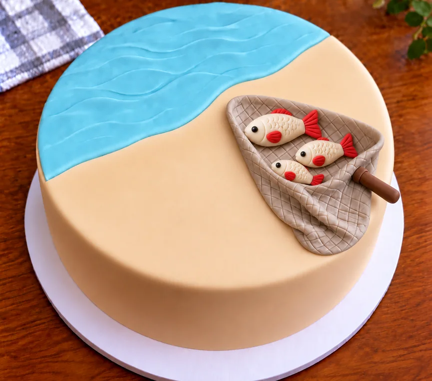
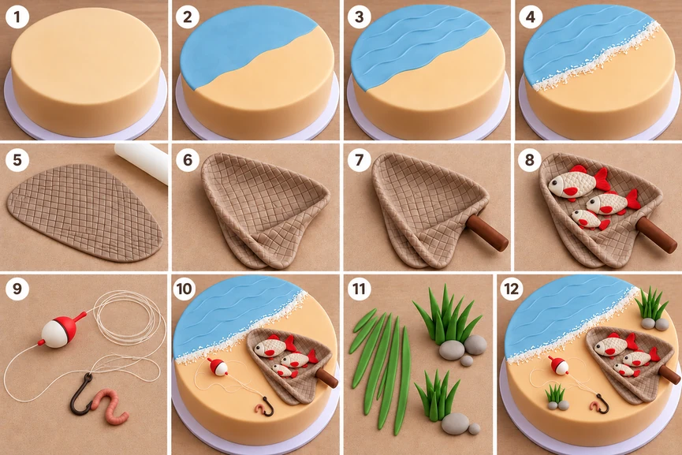

Торт для рибалки необов’язково прикрашати складними фігурками та великою кількістю тематичного декору. Рибальська тема добре зчитується за кількома деталями: водою і берегом, поплавком із волосінню, рибками або сачком.
Таке оформлення можна зробити й без мастики, використовуючи крем і крихту, а за бажання додати декоративний гель для більш глянцевої води. Інший варіант — зібрати більш деталізовану композицію з мастики. В обох випадках краще вибрати один головний акцент, а решту елементів використовувати як доповнення.
Якщо ви ще вибираєте загальну тему та стиль, перегляньте також ідеї оформлення торта для чоловіка.
Як вибрати оформлення торта для рибалки
Спочатку вирішіть, який варіант вам зручніше повторити. Якщо ви зазвичай працюєте з кремом, простіше покрити торт блакитним кремом, який зображатиме воду, а берег зробити з крему та крихти. За бажання поверх води можна додати тонкий шар декоративного гелю для блиску. Такий торт не потребує обтягування мастикою та ліплення великої кількості деталей.
Якщо ви вже трохи працювали з мастикою, з неї зручно зробити воду та берег окремими пластами, а головним акцентом композиції — сачок із рибками. Траву, камені, поплавок та інші невеликі деталі краще додавати вже після основних елементів.
Не намагайтеся використати на одному торті одразу все, що пов’язане з риболовлею. Виберіть один сюжет і один головний акцент — тоді оформлення буде легше зібрати, а готовий торт не виглядатиме перевантаженим.
Торт для рибалки без мастики
У цьому варіанті ви побачите, як оформити торт для рибалки без мастики своїми руками: зробити воду та берег, поплавок із волосінню та гачком, додати простих рибок і зібрати все в цілісну композицію. Усі елементи підібрані так, щоб їх можна було повторити вдома без складного кондитерського декору.
Як зробити воду та берег

Спочатку покрийте торт світло-блакитним кремом і добре охолодіть. Цей крем зображатиме воду. Намітьте межу між водою та берегом: вона може бути трохи нерівною, так композиція виглядатиме природніше.
Для берега нанесіть трохи рельєфніший шар крему та посипте його дрібною крихтою світлого печива або бісквіта. Жовтий барвник тут не потрібен — природний бежевий відтінок крихти краще передає колір піску й не контрастує надто різко з блакитною водою.
Блакитний крем уже сам по собі добре зображає воду. Якщо хочеться зробити її більш гладкою та глянцевою, поверх крему можна додатково нанести тонкий шар м’якого декоративного гелю. Для домашнього варіанта змішайте 65–70 г цукру, 1 столову ложку кукурудзяного крохмалю (близько 7 г), 60 мл води та 60 мл лимонного соку. Крохмаль спочатку розведіть у частині холодної води. Решту води нагрійте з цукром, додайте лимонний сік і розведений крохмаль та, постійно помішуючи, прогрійте до загустіння.
Повністю остудіть гель. За бажання додайте зовсім трохи блакитного або бірюзового харчового барвника, щоб відтінок підтримував колір крему. Колір краще робити світлим і приглушеним: надто насичений синій виглядатиме неприродно.
Якщо використовуєте гель, нанесіть його тонким шаром лише на ділянку води. Не доводьте його впритул до краю торта й не робіть товсту «калюжу»: гель залишається м’яким і в надто великій кількості може потекти. Якщо залишаєте воду тільки з крему, невеликі сліди шпателя можна не згладжувати повністю — легка фактура добре нагадує рух води.

Як зробити поплавок, волосінь і гачок

Для поплавка візьміть невелику круглу цукерку та покрийте її білою глазур’ю або шоколадом. Після застигання пофарбуйте або покрийте червоним верхню частину — простий червоно-білий поплавок уже добре зчитується в композиції.
Волосінь можна зробити зі справжньої тонкої рибальської волосіні. Покладіть її вільно: один кінець підведіть до поплавка, а частину залиште на березі невеликими петлями, ніби волосінь щойно розмотали.
Справжній рибальський гачок для такого декору використовувати не можна. Безпечну стилізацію можна зробити зі шматочка міні-кренделя: підібрати або акуратно відламати вигнуту частину, що нагадує літеру J, і за бажання покрити її темним шоколадом. На вигин додайте невеликого «черв’ячка» з м’якої солодкої маси.
Важливо! Рибальська волосінь залишається неїстівною деталлю. Перед розрізанням торта її потрібно повністю зняти разом з усіма ділянками, що контактували з декором.
Як зробити простих рибок

Рибок найпростіше намалювати кремом прямо на блакитній поверхні води. Зробіть один-два невеликі видовжені тулуби, додайте хвіст і плавники, а око позначте маленькою крапкою темного крему або шоколаду.
Не намагайтеся промальовувати луску та дрібні деталі. Тут важливіший простий упізнаваний силует: на тлі води навіть кілька штрихів сприйматимуться як рибки.
Якщо вода зроблена тільки з крему, малюйте рибок по добре охолодженій поверхні. Якщо ви додали декоративний гель, спочатку розподіліть його тонким шаром, а потім нанесіть рибок. Невдалий кремовий малюнок акуратно зніміть кінчиком ложки або невеликого шпателя й спробуйте ще раз.
Як зібрати композицію на торті
Спочатку підготуйте основу: покрийте торт світло-блакитним кремом, охолодіть і намітьте межу води та берега. Потім оформіть берег крихтою. Якщо хочете додати воді блиску, нанесіть на блакитний крем тонкий шар повністю остиглого декоративного гелю.
Після цього намалюйте рибок. Поплавок, волосінь і їстівний гачок краще розміщувати ближче до завершення оформлення, щоб не зрушити їх під час роботи з водою та берегом.
Не розкладайте деталі рівномірно по всій поверхні. Залиште частину води та берега вільною, а поплавок із волосінню та гачком зробіть головним акцентом. Так рибальський сюжет залишиться зрозумілим, але торт не виглядатиме перевантаженим.
Торт для рибалки з мастикою

У варіанті з мастикою воду та берег можна зробити окремими тонкими пластами, а головним акцентом — сачок із рибками. Траву, камені, поплавок і волосінь використовуйте як доповнення: вони допомагають зібрати рибальський сюжет, але не повинні відволікати увагу від сачка.
Як оформити воду та берег мастикою

Спочатку повністю обтягніть торт світлою нейтральною мастикою. Вона стане спільною основою, на якій розташовуватимуться вода, берег та інші деталі.
Окремо розкачайте два тонкі пласти: приглушений світло-блакитний для води та світло-бежевий для берега. Виріжте їх так, щоб межа вийшла трохи нерівною, без чіткої прямої лінії, і перенесіть на торт. Краї двох пластів краще підігнати майже впритул один до одного.
Для кріплення достатньо злегка зволожити зворотний бік мастики водою або нанести зовсім трохи харчового клею. Не перезволожуйте поверхню: деталі можуть почати ковзати, а колір — залишати сліди на світлій основі.
На воді продавіть кілька неглибоких плавних ліній, що позначають невеликі хвилі. Інший декор сюди поки не додавайте — рибки, сачок, поплавок та інші деталі в цьому варіанті розташовуватимуться на березі.
Як зробити сачок із рибками з мастики

Для сачка та рибок краще використовувати мастику, яка добре тримає форму після ліплення. Якщо ви не впевнені, яка маса для цього підходить і як її підготувати, спочатку перегляньте матеріал «Мастика для ліплення фігурок».
Основу сачка зробіть із сіро-бежевої мастики. Виріжте округлий трикутник, продавіть неглибокий ромбоподібний візерунок і злегка ущільніть та підгорніть край цієї ж деталі. Окремо виріжте невелику зовнішню драпіровку з таким самим візерунком, підкладіть її під передній край основи та сформуйте 2–3 м’які складки.
Ручку скатайте з короткого коричневого джгутика мастики, трохи приплюсніть і дайте їй трохи підсохнути. Приклейте ручку до вузької сторони сачка по центру, щоб вона залишалася короткою й компактною.

Зробіть три невеликі рибки різного розміру.

Достатньо кремово-бежевого тулуба, хвоста й плавника червоного кольору та маленького темного ока. Якщо хочете додати блиску, використовуйте лише харчовий декор, призначений для вживання в їжу.
Рибок можна підготувати заздалегідь і дати їм трохи ущільнитися, щоб вони не деформувалися під час перенесення. Сачок можна підготувати заздалегідь: після легкого підсихання основи приклейте коротку ручку, а перед установленням на торт розмістіть усередині три рибки.

Для деталей із мастики не варто встановлювати універсальний час сушіння: він залежить від їхньої товщини, складу мастики та умов у приміщенні. Орієнтуйтеся на стан деталі — докладніше це розібрано в матеріалі «Як сушити фігурки з мастики».
Як зробити поплавок, волосінь, гачок і траву
Поплавок зліпіть із мастики невеликим і округлим, із червоною та білою частинами. Для волосіні візьміть звичайний шматок тонкої рибальської волосіні. Проведіть її крізь поплавок по його осі, щоб поплавок виглядав справді нанизаним на снасть, а не просто лежав поруч.
Один кінець волосіні підведіть до їстівного гачка, а інший вільно покладіть на березі кількома петлями. Не натягуйте волосінь по прямій — легка сплутаність робить снасть природнішою.
Гачок зробіть їстівним — із коричневої мастики у вигляді простої літери J. На вигин додайте невеликого рожево-коричневого черв’ячка.
Щоб межа води та берега виглядала м’якше, по стику двох пластів місцями розсипте трохи білої кокосової стружки. Кладіть її не рівною смугою, а тонкою нерівною лінією, щоб вийшла легка берегова «піна».

Коли снасть уже лежить на своєму місці, додайте зелень. Основний акцент оформіть праворуч від сачка: зберіть вищий кущик із кількох травинок різної висоти та напрямку й покладіть поруч 2–3 невеликі камінці.
Другий зелений акцент зробіть зовсім невеликим — один компактний пучок трави розмістіть на вільній ділянці берега нижче поплавка й трохи осторонь від гачка. Поруч покладіть два маленькі камінці різного розміру. Цей елемент має лише підтримувати композицію й не перекривати волосінь або гачок.

Важливо! Волосінь — неїстівна деталь композиції. Перед розрізанням торта зніміть її повністю.
Як зібрати композицію на торті
Починайте складання з найбільших елементів. На готову світлу обтяжку покладіть пласти води та берега, потім установіть готову мастичну вставку сачка з короткою ручкою та розмістіть усередині три рибки.
Після сачка додайте траву та камені. Розташовуйте їх невеликими групами, а не рівномірно по всьому берегу — частину поверхні краще залишити вільною.
В останню чергу покладіть поплавок, волосінь та їстівний гачок із черв’ячком. Перед остаточною фіксацією деталей подивіться на торт у цілому: сачок із рибками має залишатися головним акцентом, а поплавок, трава та камені — лише підтримувати композицію.
Якщо після складання здається, що чогось не вистачає, не поспішайте додавати ще рибок, снасті або фігурки. Найчастіше вільний простір працює краще, ніж ще одна тематична деталь.

Як зібрати оформлення, щоб торт не виглядав перевантаженим
Рибальська тема дає багато впізнаваних деталей: риби, снасті, поплавки, човни, очерет, човнові мотори, відерця і навіть фігурки самого рибалки. Але використовувати все це на одному торті не потрібно.
Виберіть один головний сюжет і один головний акцент. У варіанті без мастики таким акцентом стає поплавок зі справжньою волосінню та гачком, а вода, берег і рибки створюють для нього оточення. У мастичному варіанті головне місце займає сачок із рибками, а трава, камені та поплавок його підтримують.
Спочатку розміщуйте великі елементи, потім додавайте дрібні й періодично дивіться на торт у цілому. Якщо рибальська тема вже зрозуміла, наступна деталь, найімовірніше, не потрібна.
Не бійтеся залишати частину води та берега вільною. Порожнє місце тут не означає, що оформлення не завершене: воно відокремлює деталі одна від одної та допомагає одразу побачити головний акцент.